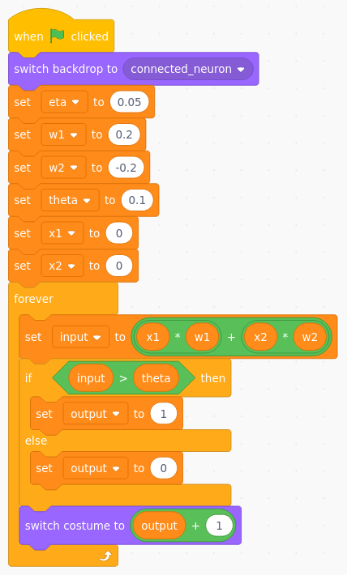
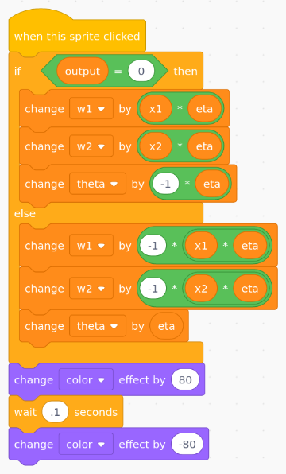
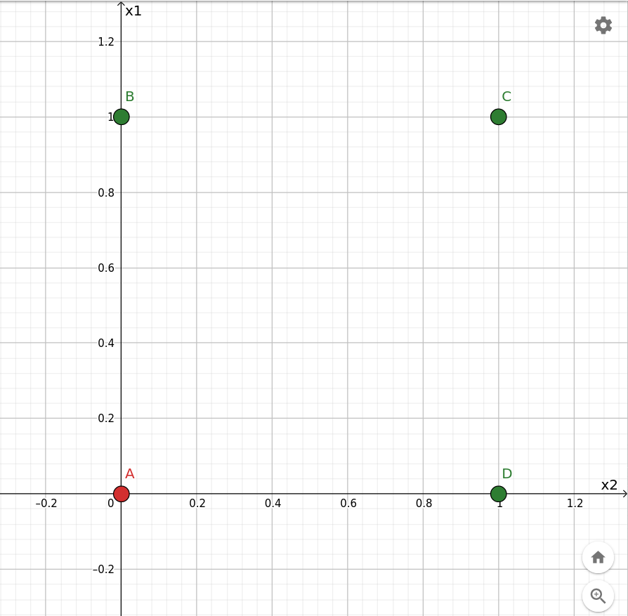
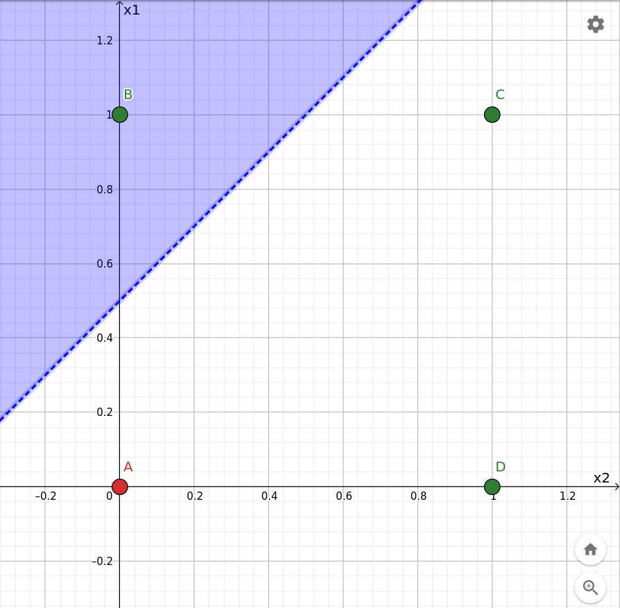
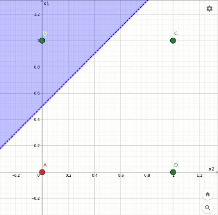
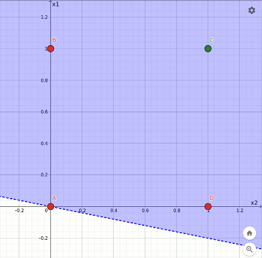
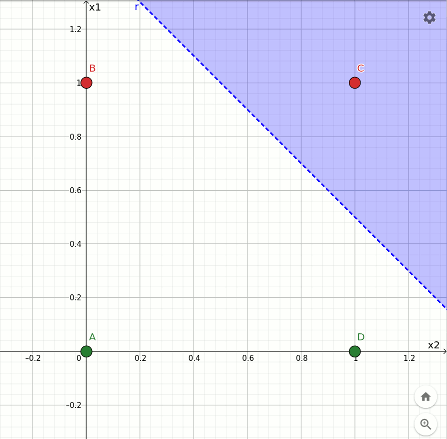
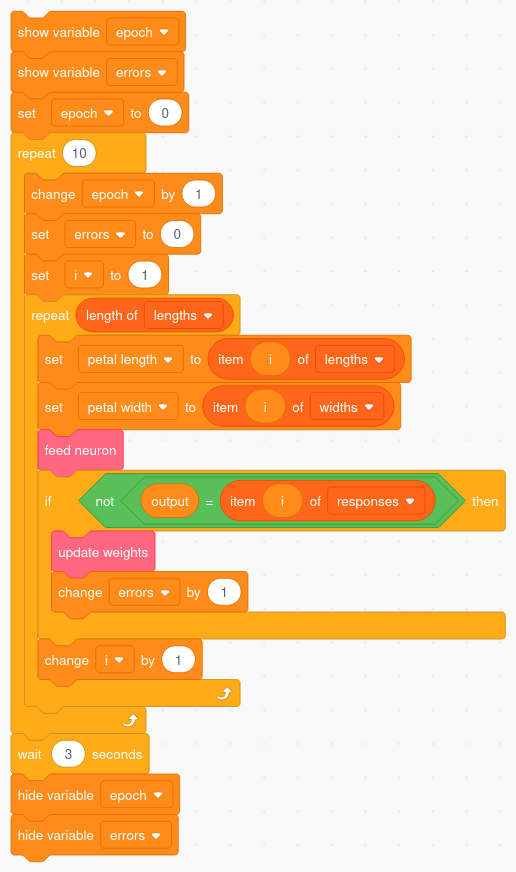
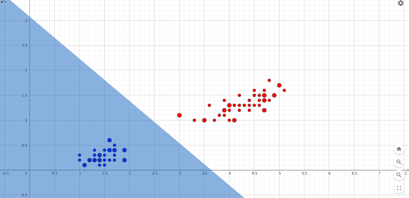
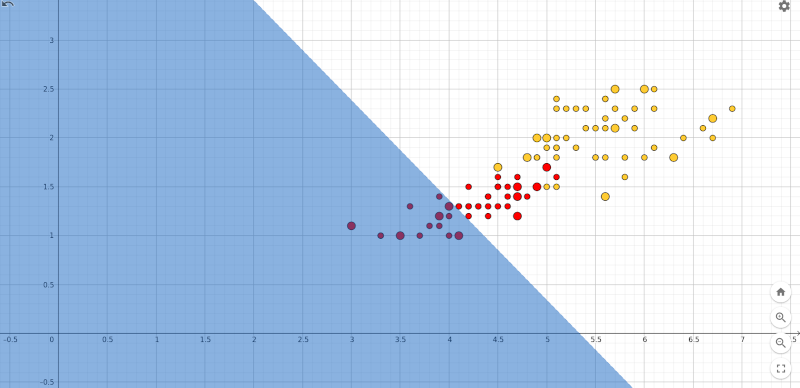

risorse | perceptron in scratch
Ho provato a realizzare in Scratch un neurone artificiale, lo storico percettrone di Rosenblatt:
Schema di un neurone artificiale (disegno di Darius Dan scaricato da www.flaticon.com).
Il neurone artificiale, il cui nucleo è detto soma, riceve gli stimoli dall'ambiente circostante attraverso delle sottili ramificazioni dette dendriti. Se il livello degli stimoli supera una certa soglia il neurone si attiva e propaga a sua volta un impulso elettrico che raggiunge i neuroni adiacenti attraverso un particolare suo prolungamento, l'assone. Le connessioni tra assone e dendriti sono modulate dalle sinapsi che possono avere un effetto eccitatorio o inibitorio, vale a dire possono amplificare o attenuare il segnale che le attraversa.
Per ridurre al minimo la complessità del codice il neurone riceverà due soli stimoli, x1 e x2. L'effetto di modulazione delle sinapsi (rappresentate dalle aree verdi nello schema sottostante) è ottenuto per mezzo di due fattori moltiplicativi detti pesi, w1 e w2. Il valore combinato del segnale d'ingresso del neurone è quindi:
input = x1·w1 + x2·w2
Se il segnale in ingresso supera la soglia θ (theta) il neurone si attiva portando l'uscita a 1; se invece gli stimoli ricevuti non sono tali da eccitarlo il neurone risponde con uno 0:
output = | 1 se input > θ |
| 0 se input ≤ θ |
Il percettrone completo.
Il programma del percettrone contempla quindi:
I valori dei pesi sono visibili nelle vicinanze delle rispettive sinapsi mentre il valore della soglia interna è mostrato al centro del neurone. In basso a destra si trova lo sprite che indica il livello di attivazione del neurone.
Per ragioni matematiche che non è opportuno approfondire in questa sede è bene che i valori iniziali delle variabili w1, w2 e theta siano prossimi allo zero. Di norma il loro valore è scelto a caso, in questo caso verranno loro attribuiti dei valori arbitrari:
Il codice che riproduce il funzionamento del neurone artificiale.
Trascurando per il momento la variabile eta, il cui scopo diverrà chiaro più avanti, il frammento di codice che riproduce il funzionamento del neurone artificiale rispecchia fedelmente quanto fin qui anticipato. È facile verificare sperimentalmente che la risposta del neurone cambia in funzione del valore assunto dalle variabili di ingresso. Quali siano le configurazioni di x1 e x2 che fanno eccitare il neurone dipende dal valore dei pesi e della soglia.
Il percettrone è dotato di una certa capacità di adattamento: se la risposta fornita non è quella desiderata si interviene sui pesi w1 e w2 e sul valore della soglia theta in modo da indurre il neurone a modificare il suo comportamento.
L'algoritmo di apprendimento del percettrone è piuttosto semplice nella sua formulazione, non altrettanto la sua giustificazione matematica che per questa ragione traslascio. Indicato con target la risposta desiderata, pesi e soglia vanno così modificati:
w1 ← w1 + η·(target - output)·x1
w2 ← w2 + η·(target - output)·x2
θ ← θ - η·(target - output)
Il parametro η (eta), detto anche tasso di apprendimento, è un fattore moltiplicativo positivo prossimo allo zero il cui scopo è quello di ottimizzare l'apprendimento cercando il giusto compromesso tra efficienza e accuratezza.
Se target=output, cioé se il percettrone si comporta come atteso, pesi e soglia rimangono invariati. Se il neurone non si è attivato quando previsto (output=0, target=1) allora i pesi subiscono un incremento proporzionale allo stimolo e la soglia abbassata:
w1 ← w1 + η·x1
w2 ← w2 + η·x2
θ ← θ - η
Di converso, se il neurone si è attivato quando non desiderato (output=1, target=0), le correzioni a pesi e soglia cambiano di segno:
w1 ← w1 - η·x1
w2 ← w2 - η·x2
θ ← θ + η
L'apprendimento viene attivato dal click sullo sprite principale:
Il codice dell'apprendimento del neurone artificiale.
Intuitivamente l'algoritmo di apprendimento del percettrone si spiega considerando il caso in cui il neurone non si è attivato quando previsto. Per aumentare le probabilità di far eccitare il neurone quando si ripresenteranno gli stessi stimoli si può agire su due fronti: aumentare il livello del segnale in ingresso oppure diminuire la soglia di attivazione. L'algoritmo di apprendimento interviene su entrambi. Consideriamo il segnale di ingresso originale:
input = x1·w1 + x2·w2
con i pesi aggiornati il valore diventa:
input' = x1·(w1 + η·x1) + x2·(w2 + η·x2)
input' = x1·w1 + η·x12 + x2·w2 + η·x22
input' = x1·w1 + x2·w2 + η·x12 + η·x22
input' = input + η·x12 + η·x22
Essendo η positivo i termini η·x12 e η·x22 sono entrambi positivi e dunque complessivamente il segnale in ingresso è aumentato, a parità di stimoli. Inoltre, poiché l'algoritmo abbassa il valore di θ, seppure di una minima quantità:
θ ← θ - η
complessivamente la probabilità che il neurone si ecciti quando in futuro riceverà gli stessi stimoli è aumentata. Considerazioni analoghe si possono fare per il caso in cui il neurone si è attivato quando non previsto: si vedrà che l'apprendimento causa la diminuzione del segnale d'ingresso e l'aumento del valore soglia, riducendo così che la probabilità che il neurone si ecciti quando riceve gli stessi stimoli.
Supponiamo di voler utilizzare il percettrone per realizzare la funzione or, che prevede che il neurone si attivi quando almeno uno dei due stimoli vale 1:
| x1 | x2 | or |
|---|---|---|
| 0 | 0 | 0 |
| 1 | 0 | 1 |
| 1 | 1 | 1 |
| 0 | 1 | 1 |
Per addestrare il percettrone occorre presentargli ciclicamente le combinazioni d'ingresso 00, 10, 11, 01 e innescare l'apprendimento nel caso la risposta del neurone non corrisponda al risultato atteso (l'applicazione dell'algoritmo si ottiene con un click sullo sprite principale).
L'addestramento non è istantaneo: in genere sono necessari diversi cicli di apprendimento — epoche, nel gergo delle reti neurali — affinché il sistema impari a rispondere correttamente a tutti gli stimoli. Con i valori iniziali proposti per i pesi w1 e w2, la soglia θ e il tasso di apprendimento η, 5 cicli sono sufficienti per completare l'addestramento. Ricordarsi di attivare l'apprendimento solo se la risposta del neurone non è quella corretta.
Il percettrone è un sistema versatile. Una volta acquisita la capacità di replicare la funzione or è possibile riconfigurarlo per replicare una funzione diversa, per esempio l'and, con le stesse modalità appena viste. In questo caso saranno sufficienti 4 cicli di apprendimento:
| x1 | x2 | and |
|---|---|---|
| 0 | 0 | 0 |
| 1 | 0 | 0 |
| 1 | 1 | 1 |
| 0 | 1 | 0 |
Un'altra funzione da considerare è per esempio not x1:
| x1 | x2 | not x1 |
|---|---|---|
| 0 | 0 | 1 |
| 1 | 0 | 0 |
| 1 | 1 | 0 |
| 0 | 1 | 1 |
Il percettrone non è in grado di imparare qualunque configurazione: per esempio non è in grado di replicare la funzione xor, quella che prevede che il neurone si attivi nel caso in cui uno solo degli stimoli sia presente. Marvin Minsky e Samuel Papert (lo stesso Papert che nel 1985 fondò il MIT Media Lab dal quale nel 2003 uscì la prima versione di Scratch!) utilizzarono proprio questa funzione per dimostrare nel loro celebre libro Perceptrons: an introduction to computational geometry i limiti teorici del percettrone:
| x1 | x2 | xor |
|---|---|---|
| 0 | 0 | 0 |
| 1 | 0 | 1 |
| 1 | 1 | 0 |
| 0 | 1 | 1 |
Se intendete cimentarvi nel tentativo di insegnare al percettrone la funzione xor, armatevi di pazienza, perché… non ci riuscirà mai!
Il percettrone è un classificatore lineare, vale a dire che taglia in due lo spazio delle configurazioni degli stimoli in ingresso e risponde 0 o 1 a seconda che la configurazione si trovi da una parte o dall'altra del taglio. Per chiarire meglio il concetto riconsideriamo la funzione or, disegnando sul piano cartesiano x1/x2 le quattro configurazioni in ingresso evidenziando in rosso quella per la quale la risposta attesa è 0, in verde quelle per le quali ci si aspetta un 1:
Rappresentazione geometrica della funzione or.
Se sullo stesso grafico si evidenzia il semipiano:
p: x1·w1 + x2·w2 > θ
si ottiene:
Il taglio prodotto dal percettrone.
Se stimolato con le configurazioni che ricadono nell'area azzurra il neurone del percettrone si accende, in caso contrario si spegne. L'effetto dell'apprendimento è quello di ricollocare questo taglio cercando di separare le configurazioni verdi da quelle rosse. L'animazione sottostante mostra l'effetto dell'apprendimento sul taglio nel caso della funzione or:
Rappresentazione geometrica dell'apprendimento della funzione or.
Si può notare che nella configurazione finale solamente i punti evidenziati in verde ricadono nell'area azzurra; quello rosso cade esattamente sul confine che però non fa parte della superficie colorata.
L'animazione che segue mostra la traiettoria del taglio nella transizione dalla funzione or alla funzione and, avvenuto in 4 epoche a partire dalla configurazione finale dell'or. In questo caso la separazione è ancora più evidente:
Rappresentazione geometrica dell'apprendimento della funzione and.
L'ultima sequenza mostra la rotazione avvenuta durante l'apprendimento della funzione not x1 a partire dall'and. Anche in questo caso un punto rosso finisce sul confine:
Rappresentazione geometrica dell'apprendimento della funzione not x1.
L'interpretazione geometrica dell'effetto dell'apprendimento aiuta a comprendere i limiti del percettrone, in particolare in relazione all'impossibilità di replicare la funzione xor per il fatto che i punti B e D non sono separabili dai punti A e C mediante una linea. Il percettrone questo non lo sa e continua imperterrito a modificare i pesi e la soglia nella vana speranza di trovare un taglio con tali caratteristiche.
Il programma del percettrone binario è scaricabile qui.
L'apprendimento del percettrone binario è avvenuto presentando una dopo l'altra tutte le possibili configurazioni degli stimoli in ingresso. Il percettrone è però anche in grado di classificare stimoli che non ha mai visto prima. Per dimostrare questa capacità lo metteremo alla prova con l'iris dataset, un catalogo di 150 misure relative a tre diverse specie di iris prodotto dal botanico Edgar Anderson nel 1936 (una copia locale è disponibile qui). Addestreremo il sistema utilizzando una parte dei dati disponibili e utilizzeremo i rimanenti per validarlo.
L'iris dataset contiene, per ognuna delle tre specie setosa, versicolor e virginica, lunghezza e larghezza del petalo e del sepalo del fiore di 50 piante diverse. In questo esperimento utilizzeremo i dati relativi al petalo, associando allo stimolo x1 la lunghezza, allo stimolo x2 la larghezza. Gli stimoli non sono più binari ma numeri in virgola mobile nell'intervallo 0÷8 e 0÷3 rispettivamente.
Avendo a che fare con un discreto numero di possibili configurazioni d'ingresso conviene predisporre una procedura automatica che si occupi dell'apprendimento. A tale scopo vengono introdotte tre nuove variabili: lengths, che contiene l'elenco delle lunghezze dei petali utilizzati durante l'addestramento, widths che contiene la loro larghezza, responses che contiene la risposta attesa dal sistema. Il codice effettua un numero arbitrario di cicli di addestramento presentando i valori di lunghezza e larghezza di un petalo al percettrone e attivando la procedura di apprendimento qualora la specie proposta dal sistema non corrisponda a quella attesa. Il codice tiene anche il conto degli errori commessi:
Il codice per l'addestramento automatico.
Per addestrare il percettrone a distinguere i fiori setosa da quelli versicolor è necessario individuare il cosiddetto training set, in questo caso una decina di fiori di ognuna delle due specie con la relativa classificazione:
| # | lunghezza | larghezza | setosa? |
|---|---|---|---|
| 1 | 1.4 | 0.2 | 1 |
| 6 | 1.7 | 0.4 | 1 |
| 14 | 1.1 | 0.1 | 1 |
| 25 | 1.9 | 0.2 | 1 |
| 27 | 1.6 | 0.4 | 1 |
| 36 | 1.2 | 0.2 | 1 |
| 37 | 1.3 | 0.2 | 1 |
| 44 | 1.6 | 0.6 | 1 |
| 45 | 1.9 | 0.4 | 1 |
| 46 | 1.4 | 0.3 | 1 |
| 53 | 4.9 | 1.5 | 0 |
| 54 | 4.0 | 1.3 | 0 |
| 61 | 3.5 | 1.0 | 0 |
| 64 | 4.7 | 1.4 | 0 |
| 68 | 4.1 | 1.0 | 0 |
| 74 | 4.7 | 1.2 | 0 |
| 78 | 5.0 | 1.7 | 0 |
| 83 | 3.9 | 1.2 | 0 |
| 87 | 4.7 | 1.5 | 0 |
| 99 | 3.0 | 1.1 | 0 |
Training set per il classificatore setosa/versicolor.
Nota: la prima colonna riporta l'indice del dato all'interno del dataset originale.
Una volta copiato il contenuto della tabella nelle tre variabili lista prima citate si fa partire l'addestramento (qui una versione del progetto con i dati precaricati). Già dopo i primi due cicli di apprendimento il percettrone non commetterà più alcun errore. L'efficacia del classificatore si conferma sottoponendo i dati di altri petali non facenti parte di quelli utilizzati nell'apprendimento. Il diagramma sottostante, ove la lunghezza dei petali è riportata in ascissa e la loro larghezza in ordinata, mostra la distribuzione dei petali setosa (in blu) e quelli versicolor (in rosso). I punti con diametro maggiore sono quelli utilizzati durante l'apprendimento:
La classificazione dei fiori setosa e versicolor.
La distribuzione spaziale dei due insiemi li rende linearmente separabili e ciò consente al percettrone di individuare in breve tempo una retta che li pone in due regioni del piano separate.
Utilizziamo lo stesso dataset per predisporre un classificatore che distingua i fiori versicolor da quelli virginica. I dati scelti per l'addestramento sono i seguenti:
| # | lunghezza | larghezza | versicolor? |
|---|---|---|---|
| 53 | 4.9 | 1.5 | 1 |
| 54 | 4.0 | 1.3 | 1 |
| 61 | 3.5 | 1.0 | 1 |
| 64 | 4.7 | 1.4 | 1 |
| 68 | 4.1 | 1.0 | 1 |
| 74 | 4.7 | 1.2 | 1 |
| 78 | 5.0 | 1.7 | 1 |
| 83 | 3.9 | 1.2 | 1 |
| 87 | 4.7 | 1.5 | 1 |
| 99 | 3.0 | 1.1 | 1 |
| 101 | 6.0 | 2.5 | 0 |
| 107 | 4.5 | 1.7 | 0 |
| 108 | 6.3 | 1.8 | 0 |
| 114 | 5.0 | 2.0 | 0 |
| 118 | 6.7 | 2.2 | 0 |
| 122 | 4.9 | 2.0 | 0 |
| 125 | 5.7 | 2.1 | 0 |
| 127 | 4.8 | 1.8 | 0 |
| 135 | 5.6 | 1.4 | 0 |
| 145 | 5.7 | 2.5 | 0 |
Training set per il classificatore versicolor/virginica.
Una versione del progetto con i dati del classificatore precaricati è disponibile qui.
In questo caso l'algoritmo di apprendimento non converge. prolungare l'addestramento a 100, 200, o 500 epoche non serve, il percettrone non smette comunque di commettere qualche errore di classificazione. La ragione è subito chiara se si considera la distribuzione spaziale dei dati, qui sotto riportati assieme alla posizione assunta dal taglio dopo 100 epoche:
La classificazione dei fiori versicolor e virginica dopo 100 epoche.
Non c'è speranza di convergenza perché i due insiemi non sono linearmente separabili.
Il percettrone è in grado di discriminare gli stimoli che riceve se questi sono linearmente separabili. Per semplicità abbiamo visto due esempi bi-dimensionali, ma la stessa considerazione vale anche nel caso generale in cui il percettrone è dotato di più di due ingressi.
La rapidità con cui il percettrone determina il criterio discriminante (il cosiddetto “taglio”) dipende dal numero e dalla tipologia di esempi usati nell'addestramento e dal valore assegnato al tasso di apprendimento η. Non esistono indicazioni di validità generale, le scelte ottimali sono spesso dettate dall'esperienza.
Un possibile problema che è stato del tutto trascurato riguarda la stabilità numerica dell'algoritmo di apprendimento, ovvero l'assicurarsi che i pesi e la soglia non assumano valori estremamente piccoli o estremamante grandi.
Le classificazioni che il percettrone non è stato in grado di individuare (lo xor e la distinzione versicolor/virginica) viene correttamente trattato da una struttura di neuroni stratificati nota come percettore multi-strato. La presenza di più neuroni permette di tracciare dei tagli curvilinei, ma al contempo richiede la definizione di algoritmi di apprendimento più complicati.
Pagina modificata il 06/06/2021